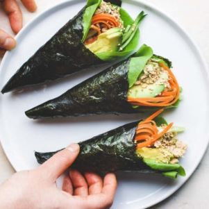

|

|
INGREDIENTS:
- Sushi rice
- Various ingredients for filling (raw fish, veggies, creative/cooked)
- Nori seaweed sheets
STEPS:
- Cut a square nori sheet in half (restaurant-style) or quarter (more home-style) and place it, shiny side down, on your palm.
- Add a thin layer of sushi rice (about 2 tablespoons) to the left third of the nori sheet (if you‘re right-handed) and flatten/spread it evenly. Place some ingredients on the rice. Here, I put cucumber, takuwan, 1-2 types of sashimi, and radish sprouts.
- Roll the bottom left corner up to the middle of the top edge of the nori to form a triangle, and continue rolling until you form a cone shape.
- Put a piece of rice on the tip of the nori to secure the folds. Enjoy!
|